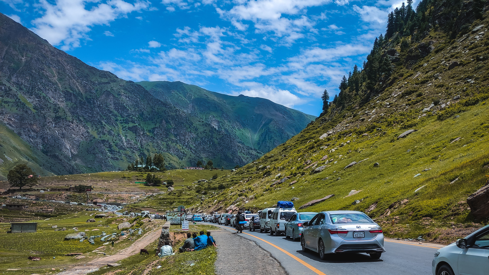

The breathtaking wonders of Pakistan's Northern Areas,
heaven for nature enthusiasts and adventure seekers alike. Nestled within the mighty Himalayas and Karakoram ranges, this region boasts unparalleled landscapes of towering peaks, crystal-clear lakes, and lush valleys. Discover the enchanting beauty of Hunza Valley, where majestic mountains like Rakaposhi and Ultar Sar create a stunning backdrop for traditional villages. Marvel at the serene shores of Attabad Lake, adorned with turquoise waters surrounded by rugged cliffs. The Karakoram Highway, one of the world's highest paved roads, leads intrepid travelers to mesmerizing destinations like Khunjerab Pass, connecting Pakistan to China. Whether trekking through the fairy-tale landscapes of Fairy Meadows or conquering the challenge of trekking K2, the second-highest mountain on Earth, the Northern Areas of Pakistan promise an unforgettable adventure amidst nature's grandeur.